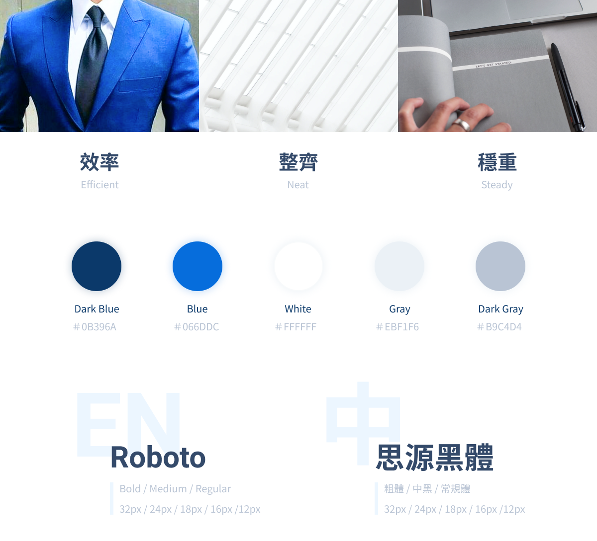
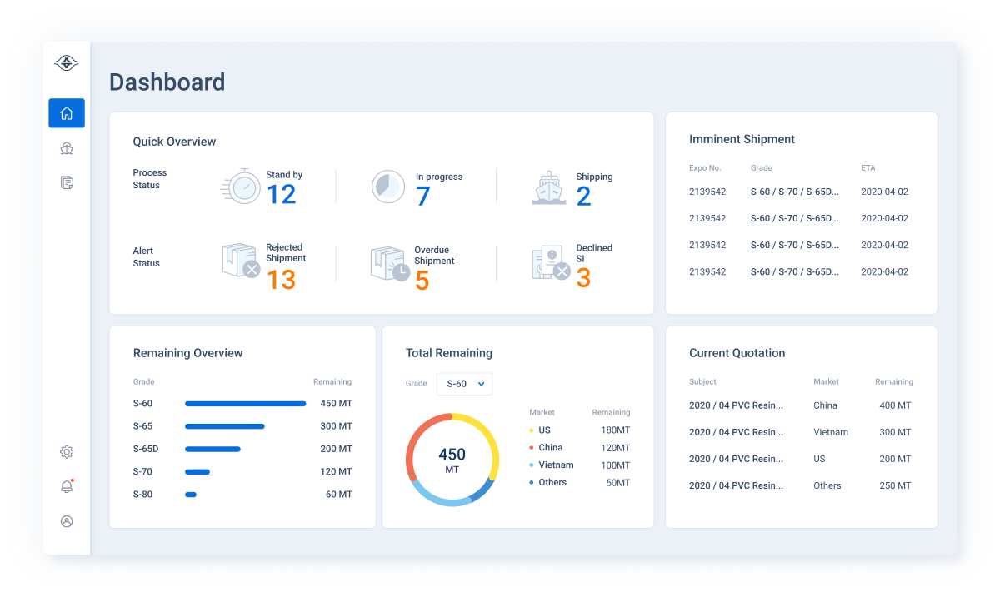
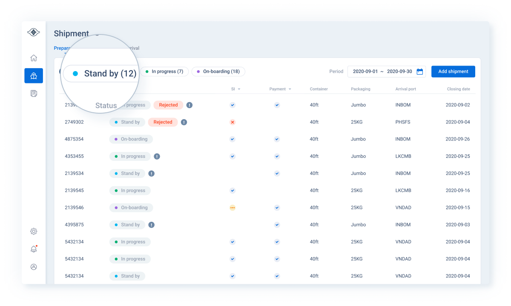
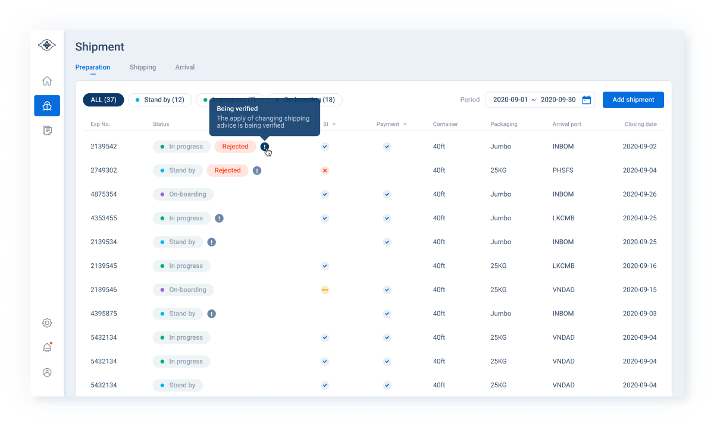
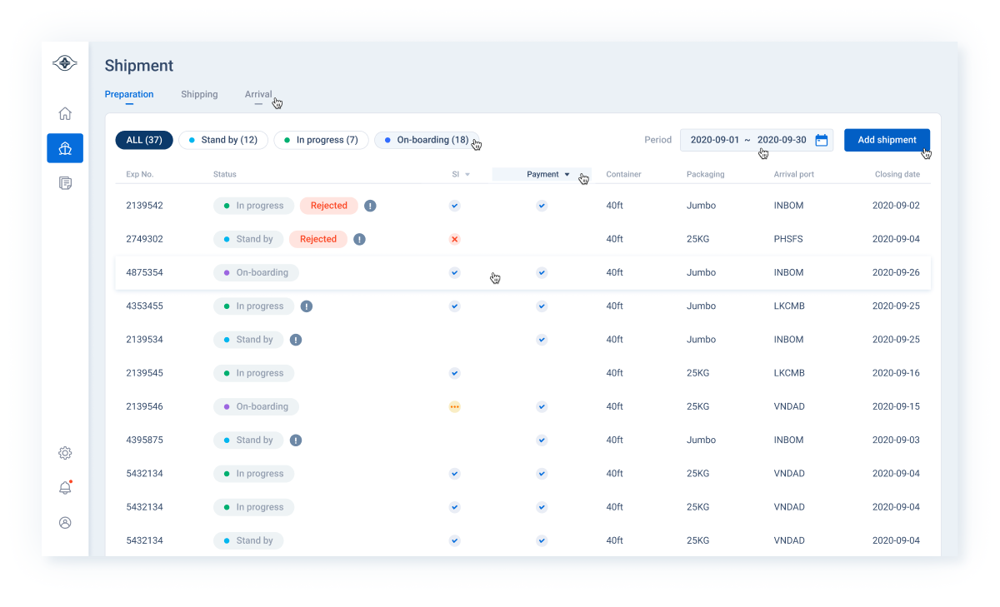
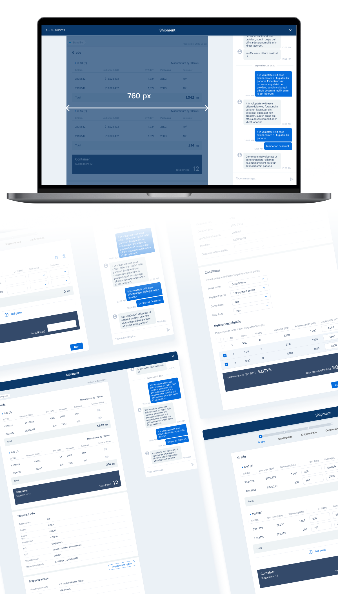
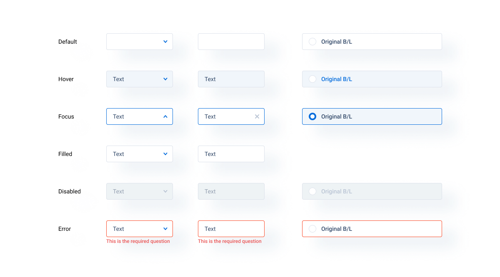
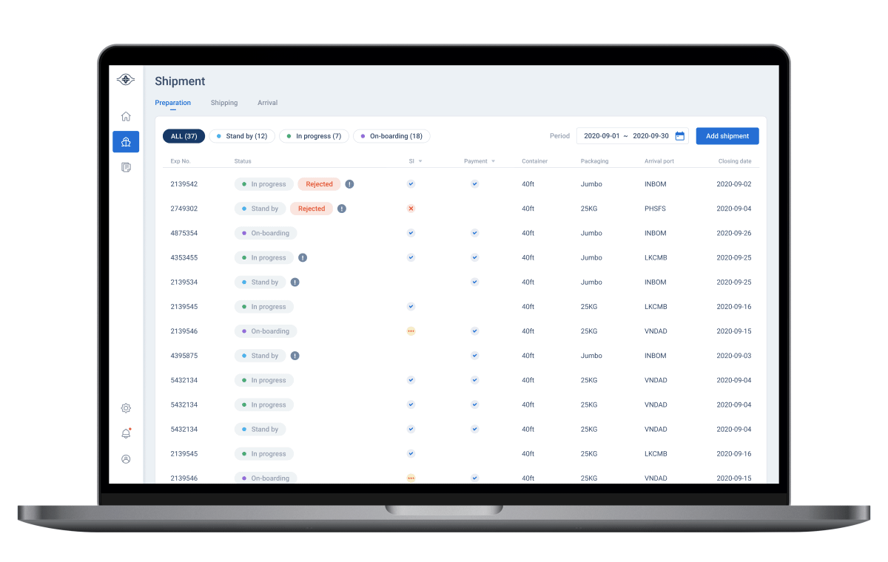

客戶為原料公司，而開發此系統是為了減少公司營業員負擔，並將原有的「來回報價」和「接受訂單」兩大作業流程電子化。此產品的目標群眾為海外不同國家的原料公司或大盤商，因此相較於一般常接觸的交易行為，我們需要透過訪談深入了解相關知識及背景，包括海外交易習慣、訂單的拆分合併、進出口限制、製造地及港口的搭配...等等。
根據產品關鍵字：效率、整齊、穩重，定調相關顏色。字型選擇著重在提高數字的辨識度，因此英文選用Roboto、中文選用思源黑體。

首頁規劃為儀表板，讓使用者快速知道原料下訂的狀況。

訂單列表依據不同處理進度有不同資訊顯示。而列表的狀態欄中，訂單的錯誤狀態層級最為重要，因此以紅色的標籤做為警示，並將該列設為置頂。其次，在狀態標籤的部分，為了幫助使用者能快速區分，也考量到不能高於錯誤狀態的層級，所以將標籤的樣式設計成帶有不同顏色的小圓點。

因為訂單的狀態非常複雜，即使經過歸納和簡化，還是會有許多在列表就需要讓使用者知道的資訊，因此選用Tooltip(指標經過即浮現資訊)的方式呈現子狀態的提示文字。

設計適當的Hover狀態，給予使用者每個操作適時的回饋。

畫面左側顯示表單內容，使用者可上下滾動來查看及編輯。這邊考量到文本寬度對易讀性的影響，因此將表單設計成760px寬，並將眾多繁雜的資訊做群組分類。而畫面右側則固定為聊天室，幫助使用者排解填寫表單的疑難雜症。

規範所有元件狀態，讓千變萬化的表單有統一邏輯。

規劃使用教學，讓第一次操作的使用者更快熟悉介面。
